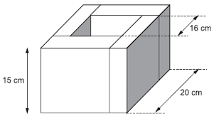

```{thebe-init}
---
thebe: true
---
Cell In[1], line 1
```{thebe-init}
^
SyntaxError: invalid syntax
Programação Orientada a Objetos (POO) - exemplo em Engenharia Civil#
Introdução à POO#
A Programação Orientada a Objetos (POO) é um paradigma de programação que organiza o software em “objetos”, em vez de procedimentos ou funções. Cada objeto pode ser visto como uma representação de um conceito do mundo real, com suas propriedades (atributos) e comportamentos (métodos). A POO ajuda a modelar sistemas de forma mais modular e reutilizável.
Conceitos principais da POO:#
Classe: Um molde ou planta de um objeto.
Objeto: Uma instância de uma classe.
Atributos: As características ou propriedades de um objeto.
Métodos: As ações ou comportamentos que um objeto pode realizar.
Encapsulamento: O conceito de ocultar detalhes internos e mostrar apenas a interface necessária.
Herança: Permite que uma classe herde atributos e métodos de outra.
Polimorfismo: A habilidade de usar o mesmo nome de método para diferentes comportamentos.
Exemplo Prático: Modelo de Estruturas para Engenharia Civil#
Vamos começar com um exemplo simples de modelagem de estruturas de concreto usando POO.
Passo 1: Definir a classe Estrutura#
A primeira coisa que fazemos é criar uma classe que representa a estrutura. Vamos definir alguns atributos básicos como altura, largura e tipo de material da estrutura.

class Estrutura:
def __init__(self, altura, largura, material):
# Atributos da classe (propriedades)
self.altura = altura
self.largura = largura
self.material = material
def calcular_area(self):
# Método para calcular a área da base da estrutura
return self.altura * self.largura
def descricao(self):
# Método para fornecer uma descrição da estrutura
return f"Esta estrutura tem {self.altura} metros de altura e {self.largura} metros de largura, construída com {self.material}."
Passo 2: Criar Objetos da Classe Estrutura#
Agora que temos a classe Estrutura, podemos criar objetos que representem diferentes tipos de estruturas.
# Criando objetos (instâncias) da classe Estrutura
estrutura1 = Estrutura(10, 5, "concreto")
estrutura2 = Estrutura(15, 8, "aço")
# Usando os métodos da classe
print(estrutura1.descricao())
print(f"Área da estrutura 1: {estrutura1.calcular_area()} m²")
print(estrutura2.descricao())
print(f"Área da estrutura 2: {estrutura2.calcular_area()} m²")
Passo 3: Herança - Classe Ponte#
Agora, vamos mostrar como a herança pode ser usada. Suponha que precisamos de uma classe Ponte que herda da classe Estrutura, mas com atributos adicionais, como o tipo de fundação.
class Ponte(Estrutura):
def __init__(self, altura, largura, material, tipo_fundacao):
# Chamando o construtor da classe pai (Estrutura)
super().__init__(altura, largura, material)
self.tipo_fundacao = tipo_fundacao
def descricao(self):
# Método para fornecer uma descrição detalhada da ponte
descricao_base = super().descricao()
return f"{descricao_base} Tipo de fundação: {self.tipo_fundacao}."
Passo 4: Criando Objetos da Classe Ponte#
Agora, criamos uma ponte e vemos como a herança funciona.
# Criando objetos da classe Ponte
ponte1 = Ponte(20, 10, "concreto", "fundação profunda")
ponte2 = Ponte(30, 12, "aço", "fundação rasa")
# Usando os métodos da classe Ponte
print(ponte1.descricao())
print(f"Área da ponte 1: {ponte1.calcular_area()} m²")
print(ponte2.descricao())
print(f"Área da ponte 2: {ponte2.calcular_area()} m²")
Passo 5: Polimorfismo - Métodos com o mesmo nome#
Podemos ter métodos com o mesmo nome, mas que se comportam de maneira diferente em diferentes classes. No exemplo abaixo, vamos modificar o método calcular_area para que ele funcione de maneira diferente para Estrutura e Ponte.
class Estrutura:
def __init__(self, altura, largura, material):
self.altura = altura
self.largura = largura
self.material = material
def calcular_area(self):
return self.altura * self.largura
class Ponte(Estrutura):
def __init__(self, altura, largura, material, tipo_fundacao):
super().__init__(altura, largura, material)
self.tipo_fundacao = tipo_fundacao
def calcular_area(self):
# Suponha que a área da ponte é calculada de maneira diferente
return self.altura * self.largura * 1.2 # Ajuste para ponte com fundação
# Criando objetos
estrutura1 = Estrutura(10, 5, "concreto")
ponte1 = Ponte(20, 10, "concreto", "fundação profunda")
# Chamando o método 'calcular_area' para ambos os tipos
print(f"Área da estrutura: {estrutura1.calcular_area()} m²")
print(f"Área da ponte: {ponte1.calcular_area()} m²")
Resumo dos Conceitos#
Classes e Objetos: A classe é um modelo, e o objeto é uma instância dessa classe.
Herança: Uma classe pode herdar atributos e métodos de outra classe.
Polimorfismo: Métodos com o mesmo nome podem se comportar de maneira diferente, dependendo da classe.
Aplicações na Engenharia Civil#
A POO pode ser usada para modelar sistemas de construção, como:
Projetos de estruturas (prédios, pontes, etc.)
Cálculos de resistência de materiais
Análise de estruturas (vigas, pilares, etc.)
Sistemas de controle de obras
Com o tempo, você pode criar bibliotecas mais complexas, com classes para diferentes tipos de materiais, fundações, e métodos de cálculo específicos, tudo modelado de maneira modular e reutilizável.